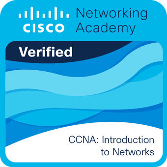
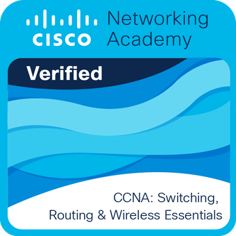

// formación
Estudios y Certificados
Estudios
2025 – 2026
Máster de Formación Profesional en Ciberseguridad en Entornos de las Tecnologías de la Información
IES Zaidín-Vergeles
2023 – 2025
Técnico Superior en Administración de Sistemas Informáticos en Red
IES Zaidín-Vergeles
2021 – 2023
Técnico en Sistemas Microinformáticos y Redes
IES Padre Suárez
Certificados

CCNA: Introduction to Networks
Cisco Networking Academy

CCNA: Switching, Routing & Wireless
Cisco Networking Academy

Python Essentials 1
Cisco Networking Academy

Python Essentials 2
Cisco Networking Academy